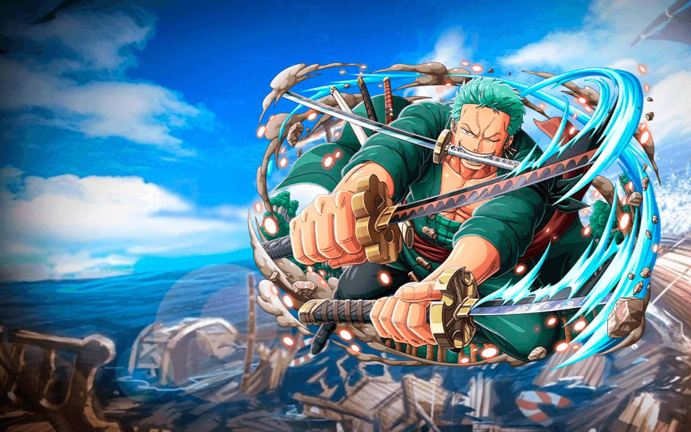
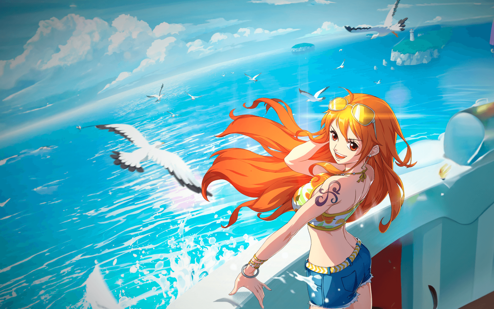
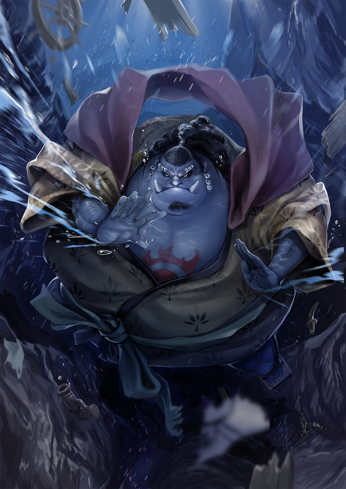
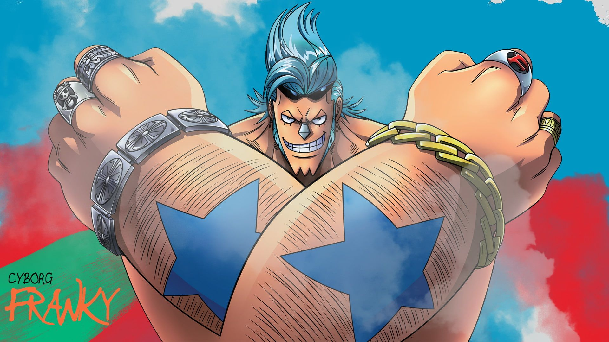
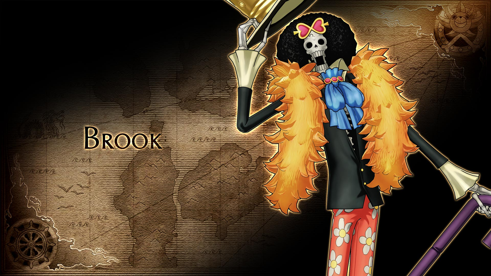
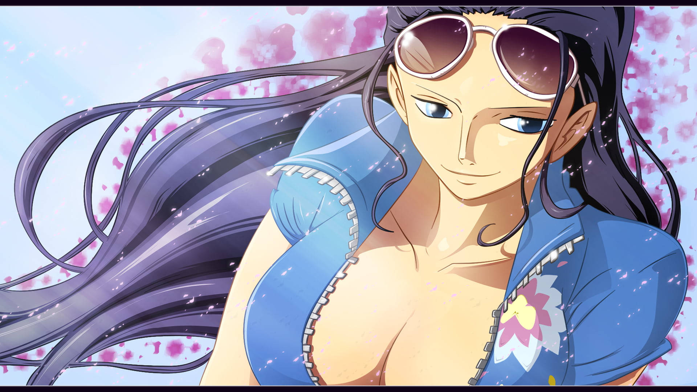

Tony Chopper
Esta pequena rena ganhou a habilidade de mudar sua forma e de pensar como humanos após comer a fruta Hito Hito no Mi. Chopper é um valioso membro da tripulação dos Piratas do Chapéu de Palha, atuando como médico da tripulação.

Roronoa Zoro
Primeiro pirata (segundo membro se contarmos com Luffy) a se juntar à tripulação de Piratas do Chapéu de Palha, Zoro aceitou o convite de Luffy após o capitão salvar sua vida.

Monkey D. Luffy
Luffy do Chapéu de Palha", como ficou conhecido, é o protagonista do anime, e o fundador e capitão da tripulação Piratas do Chapéu de Palha. Desde muito jovem, tem como seu maior sonho um dia encontrar o lendário tesouro de Gol D. Roger, para se tornar o novo Rei dos Piratas.

Nami
Uma órfã de guerra, ainda criança Nami foi adotada por Bell-mère, uma mulher da Marinha. Enquanto crescia ao lado de sua irmã adotiva Nojiko, Nami já demonstrava sua paixão por desenhar mapas, sonhando em um dia fazer o mapa de todo o mundo.

Sanji
Também conhecido como "Perna Negra" Sanji, este pirata foi o quinto a integrar a tripulação de Luffy. Suas ações como pirata lhe renderam a terceira maior recompensa entre os membros do Chapéu de Palha, além de atuar como cozinheiro oficial do grupo.

Usopp
É o Atirador dos Piratas do Chapéu de Palha. Ele é o quarto membro da tripulação e o terceiro a entrar. Usopp sonha em se tornar um corajoso guerreiro do mar como seu pai, e vive todos os dias em busca de viver à altura deste sonho.

Jinbei
Ele era um membro dos Piratas do Sol, se tornando seu segundo capitão após a morte de seu capitão original, Tiger. No decorrer da história, se tornou um dos Shichibukai, embora tenha renunciado durante a Batalha de Marineford. Antes e durante a guerra, Jinbe fez amizade com Monkey D.

Franky
O nome verdadeiro de Franky é Cutty Flam e ele nasceu em algum lugar do South Blue. Quando ele era jovem, seus pais, que eram piratas, o jogaram do navio no oceano. Ele foi então resgatado pelo lendário armador Tom, que fez de Cutty Flam seu aprendiz depois de ver o menino fazer um canhão com sucata que estava por aí.

Brook
Cinquenta e dois anos atrás, Brook fazia parte da tripulação pirata de Yorki, a Rumbar Pirates, sendo um dos vários músicos que compunham grande parte da tripulação. Enquanto ele e o resto da tripulação ainda estavam no West Blue, seu navio um dia foi seguido por uma baleia bebê que havia se perdido.

Nico Robin
Nico Robin nasceu na ilha de Ohara, e veio de uma família de arqueólogos. Sua mãe, Nico Olvia, saiu para o mar para encontrar a verdadeira história quando Robin tinha dois anos de idade, deixando-a ao cuidado do irmão de Olvia e sua esposa, Roji.